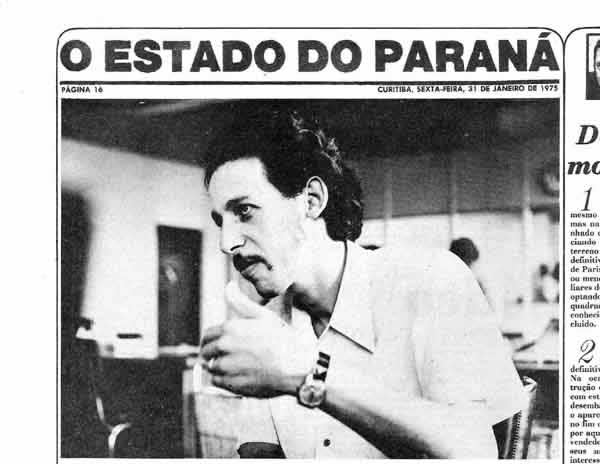
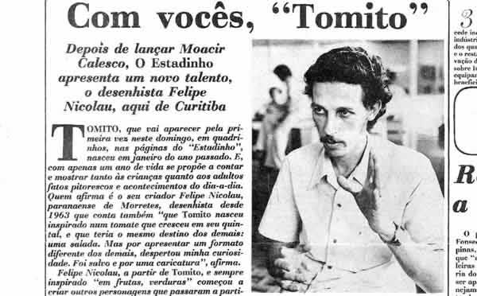
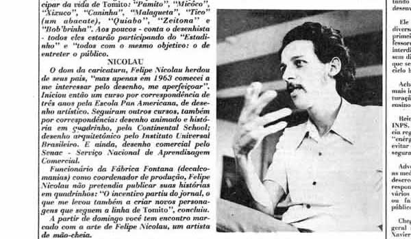
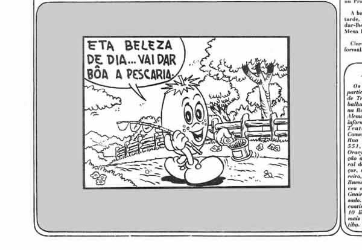

 |
|
 |
|
 |
|
 |
ESTADO
DO PARANÁ
PÁGINA 16 CURITIBA,
SEXTA-FEIRA, 31 DE JANEIRO DE 1975
Com vocês, "Tomito"
Depois
de lançar Moacir
Calesco, O Estadinho
apresenta um novo talento,
o desenhista Felipe
Nicolau, aqui de Curitiba.
TOMITO,
que vai aparecer pela primeira vez neste domingo, em quadrinhos, nas páginas
do "Estadinho", nasceu em janeiro do ano passado. E, com apenas um
ano de vida se proprõe a contar e mostrar tanto "as crianças
quanto aos adultos fatos pitorescos e acontecimentos do dia-a-dia. Quem afirma
é o seu criador Felipe Nicolau, parananense de Morretes, desenhista desde
1963 que conta também "que Tomito nasceu inspirado num
tomate que cresceu em seu quintal, e que teria o mesmo destino dos demais: uma
salada. Mas por apresentar um formato diferente dos demais, despertou minha
curiosidade. Foi salvo e por uma caricatura", afirma.
Felipe
Nicolau, a partir de Tomito, e sempre inspirado "em frutas, verduras",
começou a criar outros personagens que passaram a participar da vida
de Tomito: "Pamito", "Micôco", "Xixuco",
"Caninha", "Malagueta", "Tico" (um abacate), "Quiabo",
"Zeitona" e "Bob'brinha". Aos poucos - conta o desenhista
- todos eles estarão participando do "Estadinho" e "todos
com o mesmo objetivo: o de entreter o público"
NICOLAU
O dom da caricatura, Felipe Nicolau
herdou de seus pais, "mas apenas em 1963 comecei a me interessar pelo desenho,
me aperfeiçoar". Iniciou então um curso por correspondência
de três anos pela Escola Pan Americana, de desenho artístico. Seguiram
outros cursos, também por correspondência: desenho animado e história
em quadrinho, pela Continental School; desenho arquitetônico pelo Instituto
Universal Brasileiro. E ainda, desenho comercial pelo Senac - Serviço
Nacional de Apredizagem Comercial.
Funcionário da Fábrica
Fontana (decalcomanias) como coordenador de produção, Felipe Nicolau
não pretendia publicar suas histórias em quadrinhos: "O incentivo
partiu do jornal, o que me levou também a criar novos personagens que
seguem a linha de Tomito",
concluiu.
A partir de domingo você tem
um encontro marcado com a arte de Felipe Nicolau, um artista de mão-cheia.
| VOLTAR |